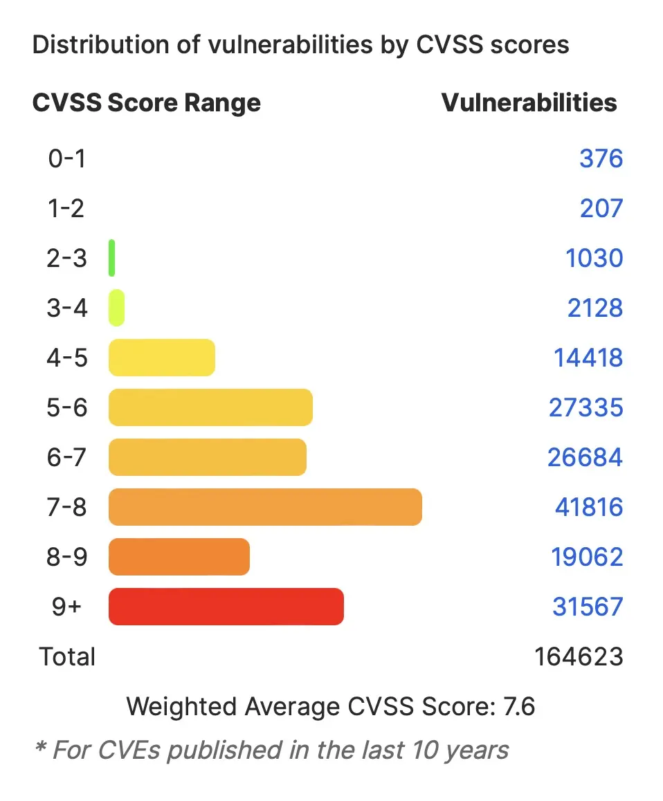

CS 3710
Introduction to Cybersecurity
Aaron Bloomfield (aaron@virginia.edu)
@github | ↑ | 
Course Reflection
Cybersecurity in a Modern Context
A series of (mostly unrelated) topics relating to computing security
Privacy and the 4th amendment
- “The right of the people to be secure in their persons, houses, papers, and effects, against unreasonable searches and seizures, shall not be violated, and no warrants shall issue, but upon probable cause, supported by oath or affirmation, and particularly describing the place to be searched, and the persons or things to be seized.”
Privacy and the 4th amendment
- 1967: Katz v. United States created a two-part test:
- Gov’t can’t contravene someone’s subjective expectation of privacy without a warrant
- That expectation of privacy must be what society recognizes as reasonable
- In today’s information age, what is a “reasonable” expectation of privacy?
- For Facebook? For financial data?
- What about email: gmail’s content-driven ads?
- What about with the (well-known) warrant-less wiretapping by the NSA?
- For Facebook? For financial data?
Reasonable privacy
- Would you like a camera in your bedroom controlled by a for-profit data-mining company?
- Enter Amazon’s Echo look and the Echo show
- It’s always on
- It has a microphone that’s always on also…
- Like anything else on the ’net, it’s hackable
- Some have opined that Amazon wants you to start getting comfortable with such a camera in your bedroom
- Sources vice.com, popularmechanics.com, theverge.com
SOPA & PIPA
- They were House and Senate bills, respectively, in 2012 that focused on digital security
- Crated by people who didn’t understand computers, they would have:
- Made sites responsible for user content (reviews, postings, etc.)
- Just the existence of such content would allow the gov’t to revoke the domain by updating the DNS
- This would prevent secure DNS encryption, which would allow easy spoofing of any domain
- Made sites responsible for user content (reviews, postings, etc.)
CISPA: SOPA take 2
- Wary of what happened to SOPA, lawmakers are treading much more carefully
- It has gone through multiple revisions prior
- This bill allows sharing (between the gov’t and security companies) of personal information
- But what is “personal information” is vague
- Which means the gov’t can interpret it to mean just about anything
- It is supported by a number of tech titans (MS, Facebook, IBM, etc.)
- But roundly criticized by privacy advocates
CISPA: SOPA take 2
- Status:
- Passed in the house in 2012, but not passed in the Senate
- Reintroduced in the house in 2013, and passed; not voted upon in the Senate
- In 2014, a similar bill (CISA) was introduced in the Senate, but not passed
- Reintroduced yet again in January 2015, and referred to committee
- Hidden (and passed!) in the federal budget passed in December 2015
Compliance with Court Orders Act of 2016
- They are still at it…
- Only a bill, and didn’t go anywhere
- It would require all “communications services” to put back doors in their software
- Because what could go wrong with that?
The 2018 version
- In the fall of 2018, various media companies tried to ressurect some aspects of SOPA & PIPA
- Recall that SOPA & PIPA tried “site blocking”, which was fiercely resisted by just about everybody
- But site-blocking has become much more common outside of the US
- Now the music industry is asking for it to be reconsidered in the US
- Sources: slashdot article from 11/28, torrentfreak article
Malware as model pandemics
- Consider a virtual outbreak
- Either malware or biological
- How does it spread? How fast? With what vector?
- Such studies can be used to model real pandemics (such as swine flu)
- Consider the Corrupted Blood incident on World of Warcraft
- Can this reliably be replicated?
Blaming the victim
- Good security is, quite frankly, often beyond the knowledge or willingness of the ‘typical’ computer user
- Different passwords, understanding malware, phishing attacks, knowing about e-mail attachment issues - the list goes on and on
- Yet the defense that software companies always make is the same
- “The systems were not patched”
- Blaming the victim!
- This is an unhelpful way to think of security
Blaming the victim
- Many things are often beyond the knowledge or willingness of the ‘typical’ user
- Remembering annual appointments (postcards!)
- Regular oil changes (the post-it with the mileage)
- Regular smoke alarm battery changes (beeping)
- Goal: assume the user is clueless, and do the security properly anyway
- MS’s automated patch install
- Regular backups (Time Machine)
BitArmor guarantee
- BitArmor sells encryption and data management technologies
- “If your company has to publicly report a breach while your data is protected by BitArmor, we’ll refund the purchase price of your software. It’s that simple. No gimmicks, no hassles.”
- Translation: if your data gets breached, and you suffer public humiliation, we’ll give you your money back
Storm worm profit estimates
- Researchers infiltrated and monitored the Storm worm in 2007
- After 26 days, and 350M e-mails, only 28 sales resulted (mostly for male enhancement)
- Average price: $100
- Profits were estimated at $2,731.88
- Just over $100 per day
- This was with 1.5% of the Storm botnet
- Extrapolating, that’s about $7,000 per day with the entire Storm botnet, if you could utilize all that capacity
- After 26 days, and 350M e-mails, only 28 sales resulted (mostly for male enhancement)
USB Pineapple

- A $100 WiFi device
- Allows a MITM
- Can view other WiFi data
- Even if encrypted (with
DLL-level encryption,
such as WEP or WPA(2))
- Even if encrypted (with
How it works
- It connects to a WiFi network, and then scans the WiFi signals sent from local computers
- Your computer has “saved” networks that you have used before
- To see if one of them is present, it has to broadcast that SSID
- The Pineapple sees this, then presents that SSID
- Your password is automatically accepted
- It will now do a man-in-the-middle attack for all your data
- Although this won’t defeat https
CVEs
- CVE = Common Vulnerabilities and Exposures
- A list of known vulnerabilities in all modern software
- Maintained by Mitre, a non-profit organization
- Also found at cvedetails.com
CVE details
- Rated as per CVSS, the Common Vulnerability Scoring System, as defined by NIST
- There is (was?) an online calculator to help find the rating…
| Severity | Base score range |
|---|---|
| None | 0.0 |
| Low | 0.1-3.9 |
| Medium | 4.0-6.9 |
| High | 7.0-8.9 |
| Critical | 9.0-10.0 |
CVE details

- As of 12/2/23, there were well over 200,000 vulnerabilities reported
- 164,623 in the last 10 years
- Stats for the last 10 years (image from cvedetails.com):
- Approximately 1,400 reported per month
Reporting vulnerabilities
- The accepted “best practice” is to notify the vendor / creator of the software about the vulnerability, and let them publish the patch
- Then it is publicized and the “finders” can claim credit
- It doesn’t always happen that way…
- Some want to embarass a company
- Companies don’t patch it in reasonable amount of time: Google discloses Microsoft Edge security flaw before a patch is ready
- Microsoft had 90 days notice, but didn’t patch it
US-CERT
- The US Computer Emergency Readiness Team
- They send out notices of critical vulnerabilities and attacks
- Subscribe at https://www.us-cert.gov
US-CERT email from Dec 3, ’18
Course Reflection
Overall course goal
- To create a single introduction course for all cybersecurity electives
- This course is a SIS-enforced pre-req for all other cybersecurity electives starting this fall
- This will prevent each of those electives from having to go over RSA, terminology, etc.
Course Objectives
- Understand the ethical and policy context for cybersecurity in today’s society
- Understand how to better safeguard one’s personal computer
- Understand the basics of advanced topics in cybersecurity including encryption, digital forensics, binary exploits, and networks
- Understand the modern concepts in cybersecurity attacks and prevention
What did you like?
There were six “modules” this semester:
- Ethics & policy, including the security mindset
- Encryption, including hashing and randomness
- Networks, including web security
- Modern topics, including SQL/XSS/CSRF, cryptocurrency, anonymity, rootkits, Stuxnet, and VMs
- Binary exploits, including viruses and buffer overflows
- Digital forensics
Follow-on courses
- Ethics & policy: a STS 2500 course was supposed to be taught on this…
- Encryption: CS 4501/6501 offerings on cryptography
- Binary exploits: CS 4630, Defense Against the Dark Arts
- Networks: CS 4760, Network Security
- Modern topics: CS 4501 offerings: Cybersecurity and Elections, Cryptocurrency, Data Privacy, etc.
- Forensics: a CS 4501/6501, Digital Forensics, is occasionally offered
What was new this semester / term
- VERY small enrollment, due to the course being added late
- The auto-graders were updated
Summer homework comments
Spring/fall homework comments
What didn’t work well
- Slow grading on a few homeworks (the written ones)
- Homework difficulty was not as even as I would have liked, although I’m not sure how to solve this
- A few recent auto-graders had issues
What did work well
- The discussions – partly due both to the small class size and the participation component
- The homeworks, even those that were a lot of work
- I (mostly) kept up with the grading
- The homeworks matched well with the lectures, even if some were delayed a bit from when they were presented in lecture
Changes for “next time”
- This is for a fall/spring semester…
- Changes a few of the homeworks
- Buffer Overflow needs an overhaul (again)
- A different story line to the forensics HW
- More readings throughout the semester
- Changes a few of the homeworks
Let me know your comments!
- Please send me your feedback!
- Either by e-mail or anonymously or on the course surveys
- And please fill out the course surveys!
Have a great break!